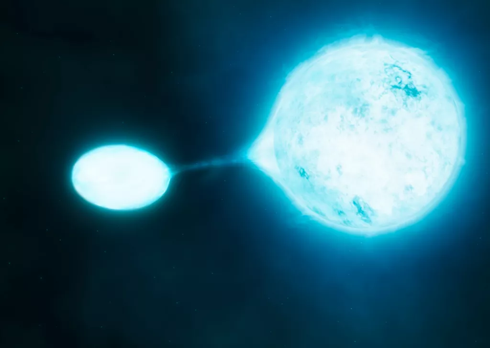
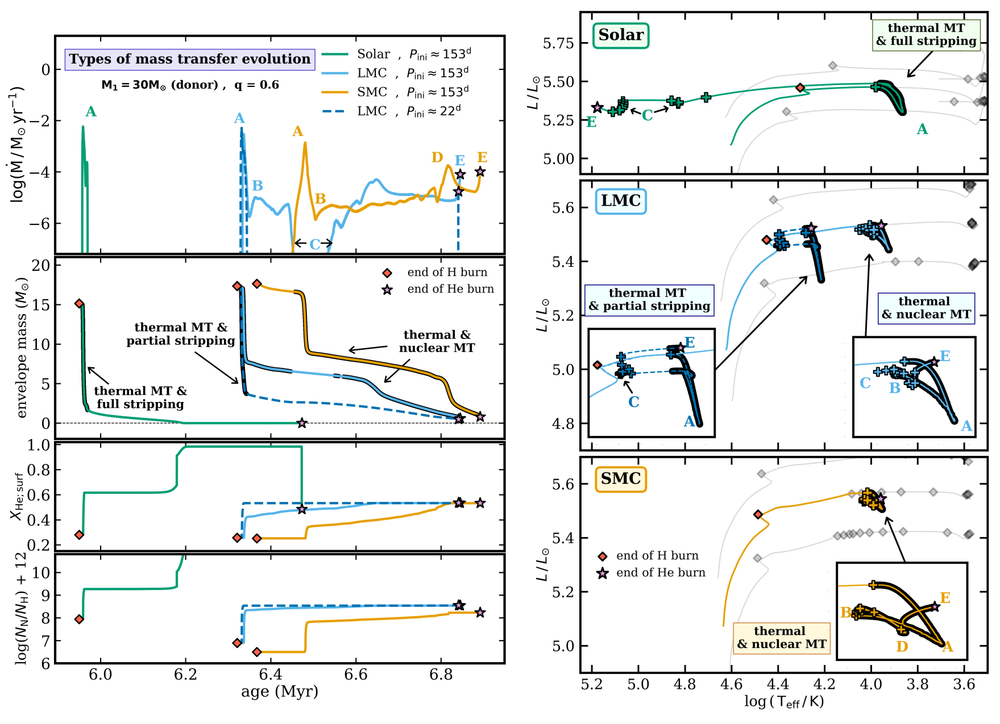

Hi there. I am an astrophysicist studying the extrodinary lives of massive stars and their fate as neutron stars and black holes. I am currently based in the Max Planck Institute for Astrophysics
in Garching bei München (Germany) as an MPA Fellow.
My focus is on the evolution of massive stars, particularly those living in close binary systems, in which the two stars
strongly interact with one another. My work is computational in nature: I use the combination of detailed stellar-evolution computations (which model the interior structure of stars and how it evolves) with rapid population-synthesis calculations that allow to study the global properties of billions of stars across the Cosmic History.
I am particularly interested in the formation of gravitational-wave sources: binary black-hole and neutron-star mergers detected by the LIGO and Virgo interferometers.
But my interests include various aspects of stellar and binary evolution, mass transfer and common-envelope evolution, compact objects and X-ray binaries, related transients, stellar interiors and chemical mixing, as well as dynamical interactions in dense stellar clusters.
You can learn more about my work here. See below for some of the highlights.
Apart from stars and all that, I love mountains, bouldering, playing squash (until I can move no more) and chess. Take care!

The majority of massive stars live in pairs (binaries) or even higher-order systems. In most of such systems, the stars will at some point strongly interact with one another by transferring mass and angular momentum. Often such a mass-transfer interaction happens when one of the stars expands rapidly to become a red supergiant. It has long been thought that what results is a short-lived phase of rapid mass exchange (< 10,000 yr), which strips the mass-losing star of its nearly entire H-rich envelope, revealing the hot helium core. The process of envelope stripping in binaries is thought to be the key stage in formation of H-free supernovae and UV-bright helium stars.
Common-envelope (CE) evolution in isolated binary systems is thought to be one of the leading channels for producing double compact object systems (binaries of black holes, BH, or neutron stars, NS) that eventually merge and can be detected in gravitational waves. The CE phase itself, during which a BH or a NS spirals in inside a supergiant's envelope, is one of the most uncertain stages of the channel. In this paper we ask a question which BH binaries with supergiant companions will evolve through and can potentially survive the CE phase.
In pursue of the most optimistic case, we make a number of physically extreme assumptions in favor of easier CE ejection. We find that even then a successful CE evolution in BH binaries is only possible if the stellar companion is a convective-envelope star: a red supergiant (RSG) as shown in the HR diagram below.

Interestingly, no RSGs are observed above luminosities of about log(L/L⊙) ≈ 5.6−5.8, corresponding to stars with initial above 40 solar masses. Either such RSGs elude detection due to short lifetimes, or they do not exist (for instance due to strong winds), implying an upper limit on the masses of binary BH mergers from CE evolution at about 50 M⊙.